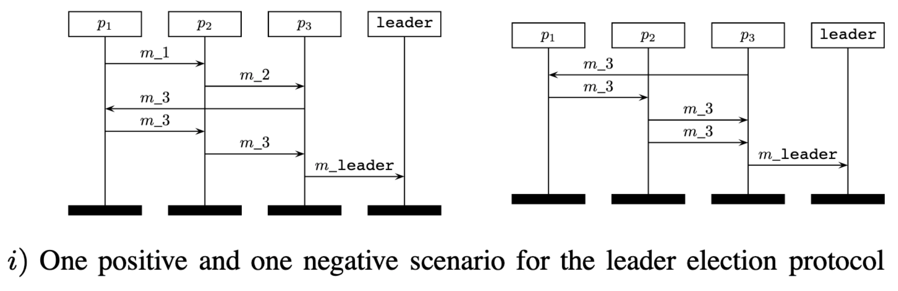

Developers Rarely Think At The Level Of Individual Messages

"A
Message Sequence Chart
... describes the message flow between instances. One Message Sequence Chart describes a partial behaviour of a system."
Bollig et al. 2010; International Telecommunication Union (ITU) Recommendation Z.120